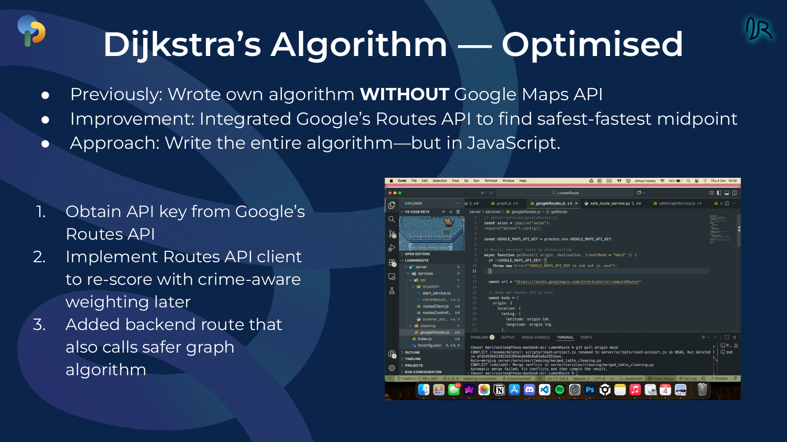
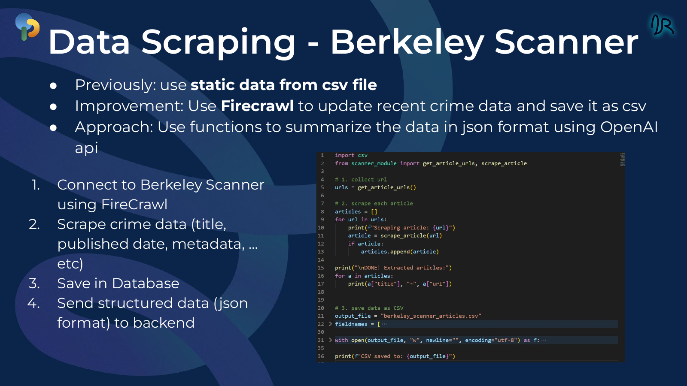
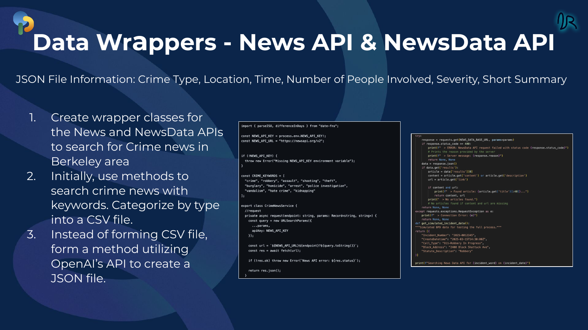

LumenRoute

Navigation that considers more than the shortest path.
LumenRoute was designed to provide safer route options using crime data. The project combined a polished navigation UI, routing logic, and normalized incident data from multiple sources.
Balancing the fastest route with a safety-aware score.
The system integrated Google Routes API while retaining a custom safer-graph route, allowing route candidates to be rescored with crime-aware weighting.


Making live incident feeds usable.
The project moved beyond static CSV data by collecting and normalizing real-time information from sources such as Berkeley Scanner and news APIs. Structured records captured attributes such as crime type, location, time, severity, and summaries.
